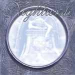

|
|
||
Nightwish : Once (2004) |
|

http://www.nightwish.com |
1. Dark Chest of Wonders 4:28 |
8/10 |
|
El último disco del grupo más conocido del metal finlandés, y estandarte del metal sinfónico, Nightwish, es sin duda un trabajo de enorme ambición y complejidad que, a pesar de las dificultades que eso conlleva, ha sido llevado a buen puerto. La participación de la orquesta de la academia londinense de "St. Martin in the fields", que grabaron la banda sonora de "El señor de los anillos", no se le ha ido de las manos a Tuomas Holopainen, que ha administrado sabiamente su participación, y la ha hecho encajar perfectamente con sus ideas compositivas y el estilo de Nightwish. "Dark chest of wonders" es un gran arranque para el disco, potente y pesado, de tono más oscuro que los primeros discos de la banda, pero igualmente pomposo y espectacular, con una Tarja Turunen de voz más suave y menos "clásica", estilísticamente hablando, que en trabajos previos, algo que se mantiene en el resto del álbum. "Wish I had an angel" es un tema bastante crudo, para Nightwish, de ritmo muy marcado, donde la voz de Marco Hietala, que es de lo que menos me gusta de la banda, grave, con un rango tonal limitado y un estilo que salta de los gruñidos a la claridad sin brillar en ninguna de las dos facetas, da la réplica a la de Tarja. El tercer tema, "Nemo", es el primer single que se oyó, y es uno de los temas más pomposos del disco, no en vano la orquesta se hace notar, con una atmósfera profunda y envolvente y salpicado de cambios de ritmo e intensidad. En "Planet hell" los coros preparan el ambiente hasta que llegan algunos riffs muy metaleros y de nuevo el duelo de voces entre Tarja y Marco, perfectamente imbricado entre las evoluciones de la orquesta y los coros. Tras dos temas lentos, "Creek Mary's blood", que incluye cantos e instrumentos de nativos americanos y "The Siren", de nuevo a dos voces, llega "Dead gardens", tema denso y oscuro, a base de guitarras muy graves, y con un acertado toque melancólico en la voz de Tarja. "Romanticide" se mantiene en la misma senda tétrica y contundente, esta vez con una voz más brillante, ritmos más cambiantes y un final aterrador. "Ghost love score" le da a la expresión "metal sinfónico" un maravilloso ejemplo: la orquesta en todo su esplendor, coros variados y espectaculares y contundentes riffs de guitarra que no se pierden entre los demás instrumentos. "Kuolema tekee taiteilijan" es el complicado título de la primera canción de Nightwish completamente escrita en finlandés, una balada donde la voz de Tarja es acompañada únicamente por la orquesta, y que incluye un emotivo solo de violonchelo. El disco termina con "Higher than hope", una balada más metalera, triste y dramática. He leído muy buenas críticas de este disco de Nightwish, pero yo no creo que sea el mejor que han hecho: a mi me sigue gustando más Wishmaster. De hecho para mi los dos últimos trabajos, desde la incorporación de Marco Hietala, hacen demasiadas concesiones al rock duro más actual, como por ejemplo incorporar guitarras más graves y simplificar los solos, y además insisto en que la voz de Marco no me termina de convencer. Este disco tiene cuatro temas bastante buenos que son "Dark chest of wonders", "Nemo", "Ghost love score" y quizás "Kuolema tekee taiteilijan", y el resto del disco no está mal, pero lo cierto es que quitando estos cuatro, los demás no se te quedan aún después de escuchar el disco unas cuantas veces, y esto es un hecho bastante significativo. |
||
- Crítica escrita por Rubén Béjar - |
||